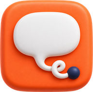
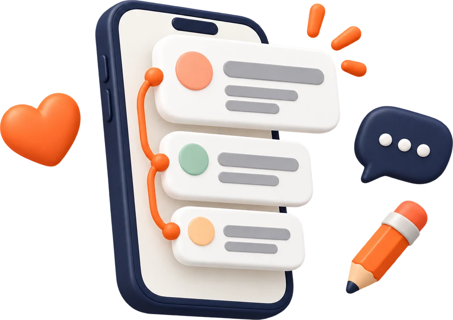

원하는 반응을 고르면 그 반응이 실제로 나온 구조로 첫 글과 이어지는 답글을 써줘요. 고치고 복사해서 바로 올리면 돼요.

여기 없는 성과나 수치는 지어내지 않고 [대괄호]로 비워둬요.
회원가입 후 관리자가 승인하면 하루 정해진 횟수만큼 쓸 수 있어요. 비밀번호를 잊었다면 관리자에게 초기화를 요청하세요.
임시 비밀번호로 로그인했어요. 계속 쓰려면 새 비밀번호를 정해주세요.